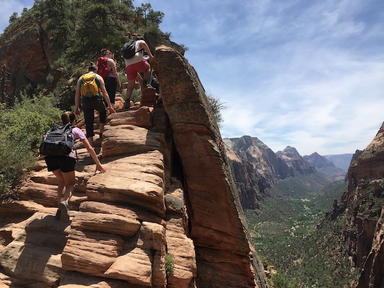
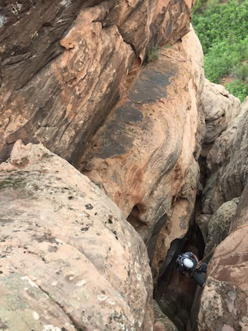
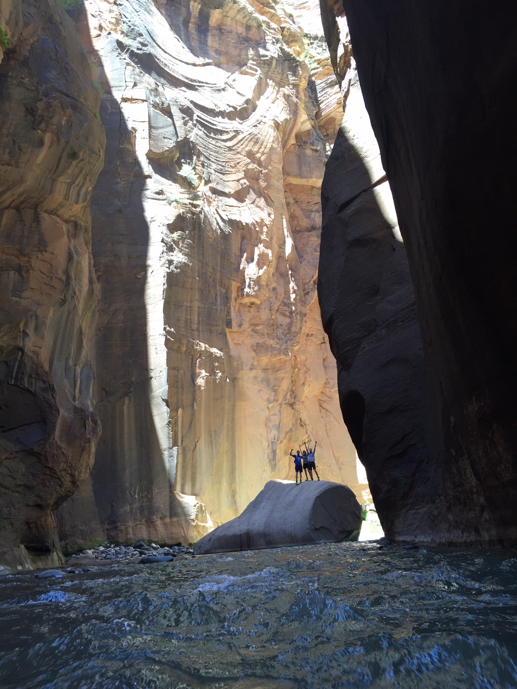

Angel's Landing
The trail comes very close to the cliff's edge
A beautiful hike along a tall ridge that juts into the canyon. Sections were very steep, and some very narrow, with thousand foot drop‑offs just feet away on either side of the path.
Canyoneering
This was all in slot canyons on the Kolob Terrace, outside of the park itself. We had a couple of guides. They were pretty rad.
The Narrows
This was a hike through the northern canyons, much of it through the river itself. The canyon walls were very close together, and towered hundreds of feet overhead, hence the name "The Narrows." Every turn was a beautiful new sight to take in.